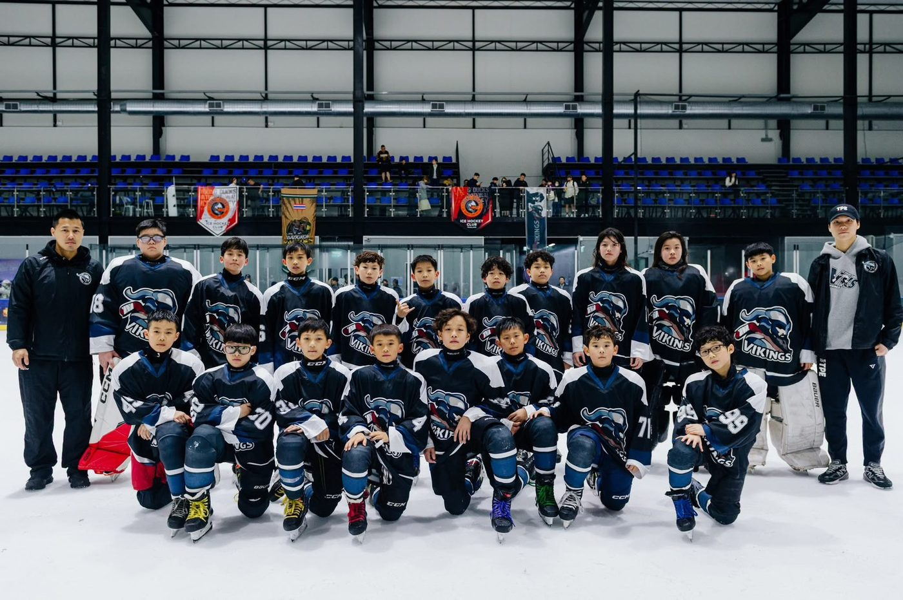
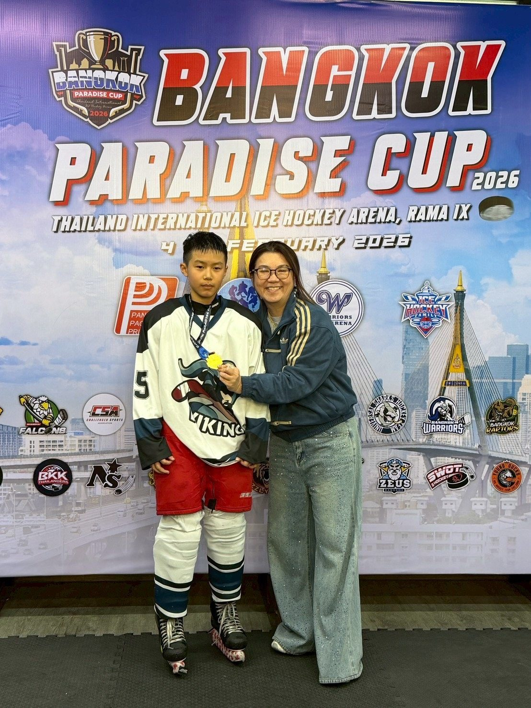
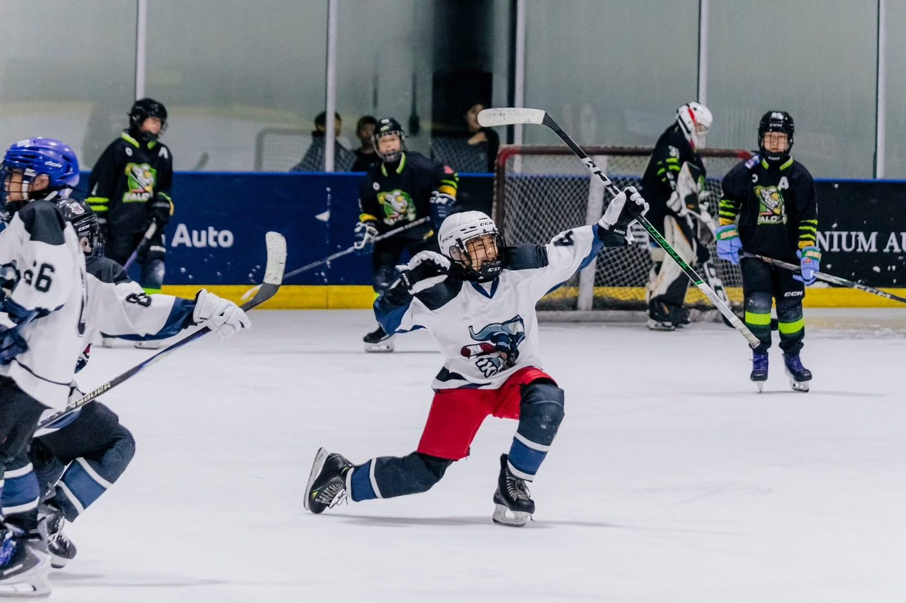
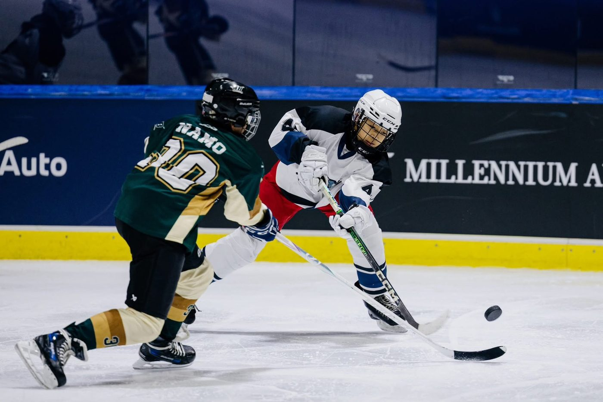

01我的故事
在冰上，學會不放棄
張晉魁，12歲，冰上曲棍球前鋒。
從9歲開始踏上冰場，從一開始的不熟悉，到現在能在比賽中穩定發揮，每一步都來自長時間的訓練與反覆練習。冰球對他來說，不只是運動，而是一段持續學習與成長的過程。
在冰上，他學會速度與判斷，也學會在壓力下保持專注。在比賽中，不論領先或落後，仍全力投入每一次滑行與進攻，逐漸建立屬於自己的比賽節奏與信心。
近年於多項全國性冰球賽事中取得佳績，並在國際賽中獲得金牌，累積實戰經驗，也持續提升競技實力。
在場下，則由父親陪伴往返訓練與比賽。在有限資源下，仍努力維持穩定訓練，只為讓孩子能繼續站在冰場上，專心做自己喜歡的事。
未來，期望能持續精進冰球能力，挑戰更高層級賽事，並朝代表台灣參與國際比賽的目標前進。



